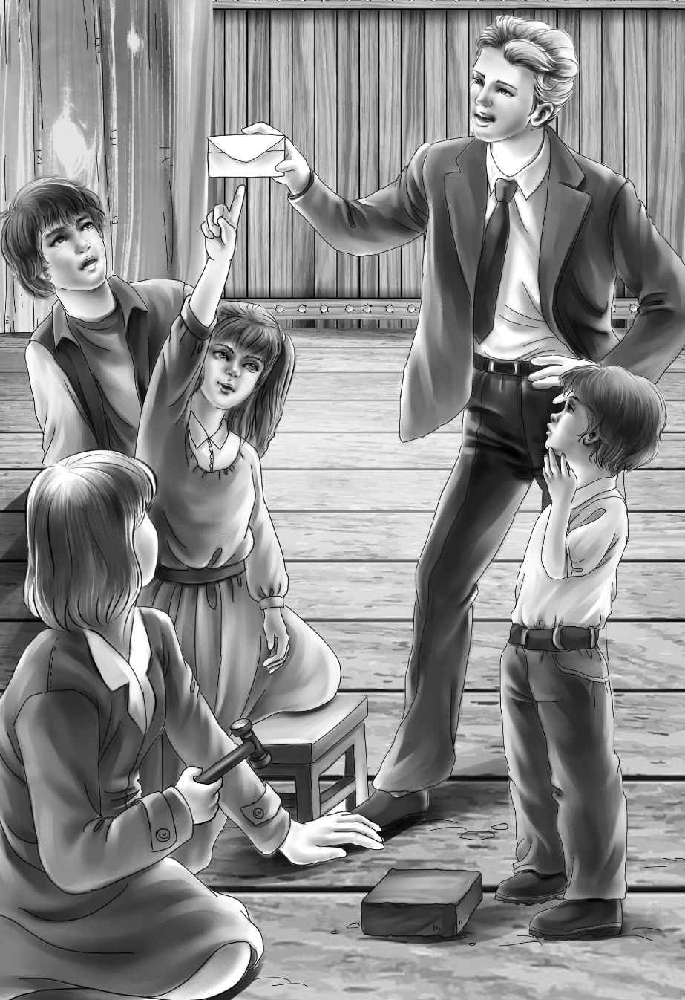
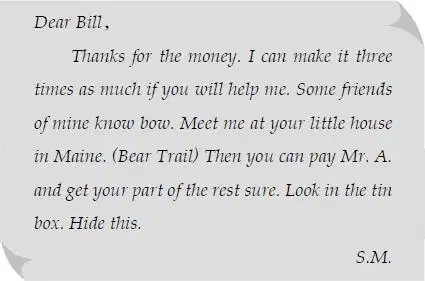

It seemed a long time to the four children before Joe and Alice came home.But at last they drove up to the front door in a new station wagon.
“It’s Joe！” shouted Benny. “He’s got a new station wagon！” He ran down the steps.“Oh， Joe， why did you buy a station wagon when there are only two of you？”
“Guess！” said Joe， laughing. He jumped out and gave his hand to his beautiful young wife.
Then the other children ran out to see Joe and Alice. Everyone was laughing and talking at once. They took bags and boxes and went into the house. Watch barked and jumped around，to show how glad he was to see Joe again.
“I bet you got a station wagon so we could go too，” cried Benny.
“That’s right，” said Alice， smiling at him.“ Won’t we have a lot of fun in that station wagon！”
“We know where to go first，” Benny went on. “Want us to tell you？”
“Children， children！ Do let Alice sit down one minute，” said Mr. Alden as he came out into the hall. “You have lots of time， you know. Come in， Alice， and let them talk.”
But the children could not wait. Before they knew it， they were telling all about the mystery of the little yellow house.
“What a story！” said Joe. “I’ve wondered about that house myself. I’d like to go inside.”
“We waited for you to go with us，” said Henry.
“Will you both go？” asked Jessie.
“Of course we will，” said Alice.
Joe laughed. “Well，” he said， “it looks as if we would go right back to Surprise Island.”
“Today？” cried Benny.
“Yes， today！” said Joe and Alice together.
Mr. Alden laughed. “Let’s have lunch first，”he said.
“You’re right， Grandfather，” said Violet.“ Alice ought to see the presents in her house. Beautiful dishes and things. They came after the wedding， Alice.”
“Lots of food， too，” said Benny. “All in tincans. A whole ham. And whole chickens and things. But won’t you eat lunch with us just today？”
“Of course we will，” said Joe. “You can show us the tin cans when we come back from the island. How will that be？”
“Fine，” said Benny. “We can go to the dock in the new station wagon. I guess Captain Daniel will be surprised to see us.”
“I guess so， too，” laughed Joe. “We just said good-bye to him.”
Soon it was time for lunch. Henry was thinking what to take to the yellow house. “I shall take my tools，” he said to Jessie， as he sat beside her at the table. “Maybe we’ll need them. I don’t think of anything else， do you？”
“A flashlight，” said Joe， who had heard them.“ There aren’t any lights there.”
“Oh， thank you， Joe，” cried Jessie. “I’m glad you don’t think we are silly to go.”
“Indeed I don’t. It sounds very interesting. Alice thinks so， too.”
“You did pick out a very nice girl，” said Benny.
“Thank you， Benny，” said Alice laughing.
“Is there room for me？” asked Mr. Alden， to everyone’s surprise.
“Room for you！” said Violet going over to her grandfather. “There’s always room for you！”
Just the same， they were all surprised and delighted that Mr. Alden wanted to go.
“There are chairs for you to sit in，” said Benny. “I saw them through the window. Oh， I wish we were there this minute.”
In about an hour， Benny had his wish. The whole family left the boat at the dock on Surprise Island， and now stood at the front steps of the little yellow house. They went up the four wooden steps. Mr. Alden himself opened the door. They went in the front room and looked around.
There was a table in the middle of the room. Old papers were on it. There was a fireplace with a brick chimney painted white on one side of the room. There was a desk on the other side. Everything was covered with dust.
“This is the very room where Bill sat reading the paper， Joe，” said Henry.
“The queer grating noise came from this room，” said Jessie.
“Now，” began Henry， “let’s look around and see what could make a grating noise.”
“The drawer in the table，” said Alice.
“The drawers in the desk，” said Mr. Alden.
“The boards in the floor，” said Jessie.
“The chimney，” said Benny.
Everyone looked at the strong brick chimney and smiled at the little boy. But Henry said kindly， “That’s right， Benny.”
“We’ll look at every brick，” said Benny.
“Yes， you look at every brick，” said Jessie.“ You remember the police looked down the chimney with a light， Benny？”
“Yes， I remember， but they looked at the floor boards too， and all the other things you said.”
“That’s right， too，” said Joe. “Now， what’s first？”
“The table drawer，” said Henry，pulling it out. “Not much here.”
“It grates when you pull it，” said Alice.
There were two pens in the drawer， two fish hooks， and an old paintbrush.
“The paint！” shouted Henry.
“I don’t think this is paint， though，” said Joe. He smelled of the paintbrush. “I think this is whitewash.”
Everyone was excited.“ Maybe we’ll find something new， after all， Grandfather，” said Jessie.“Did the police know this was whitewash？”
“No， I don’t think so，” replied Mr. Alden.“ They would have taken the paintbrush with them if they had thought it was a clue. The police did not work as well in those days as they do now. You can take the drawer to pieces if you want. Something may be hidden in the cracks.”
Henry tapped the drawer with his hammer， and soon took off the sides. But there was nothing there.
“The desk next，” said Mr. Alden. “Two drawers in that.”
“Maybe a secret drawer，” said Joe.
They took out both drawers and put them on the table. “A pen. Some old writing paper. That’s all，” said Henry.
“Now， look at the floor boards，” said Jessie.“ We can take up the rugs.”
There were two small rugs. Joe looked at them carefully. Then he rolled them up and put them on a chair. The whole family went to work. Mr. Alden sat and watched. Each one took a stick and looked in every crack. Up and down the room they went on their hands and knees.
At last Joe said， “All done. I don’t think these floor boards have been moved. I don’t think the clue is there.”
“Well， then， my chimney！” shouted Benny.“ Every， every brick！”
“That will take many days，” said Henry laughing. “First we’ll tap every brick. You all listen and see if any brick sounds different from the others.”
“Let me tap，” said Benny. “I thought of the chimney.”
“Well，” said Joe， “let him tap， Henry. Let me show you， Ben. Tap like this.” Joe struck a brick lightly once or twice.
Benny got down on the floor. He started with the first brick. “Tap. Tap. Tap-tap，” went his hammer. Then he took the next brick. He tapped just the way Joe had shown him. At last the family sat down， smiling. There were so many bricks.
Suddenly Jessie jumped up. “I think that one sounds different！” she said. She got down beside Benny.
“I don’t，” said Henry. “Tap it again， Benny.”
“Tap. Tap. Tap-tap，” went the hammer.
“Well， maybe not，” said Jessie. “I thought it did the first time.”
In a few minutes Violet said， “Listen again to that one！ That one sounds different to me.”
“It’s right over the first one，Violet，” said Benny. “Right over the one Jessie heard.”
But it did not sound different to anyone else.
“Go on， my boy，” said Mr. Alden leaning forward. “Keep on tapping.”
The children all looked up at their grandfather. They were surprised to see that he was excited and very white.
Benny began on another row of bricks. Then it was Mr. Alden himself who said， “Stop there！ Tap again！”
“That last one is different，” cried Joe.“ Give me the hammer a minute， Ben！”
But Joe did not use the hammer. He just looked at the brick.
Benny was looking at it too. “Whitewash！” he whispered.
“Whitewash.，” said Joe. “I do believe that this brick has been taken out and put back again.”
“Can you take it out， Joe？” Alice asked excitedly.
“I’m going to try，” answered Joe. “We don’t want the whole chimney to come down.”
“Here’s the screwdriver，” said Benny.
“Just what I want，” cried Joe. “Yes， this brick has certainly been taken out！” He put the screwdriver at the edge of the brick and tapped it with the hammer. Out came dried whitewash.
“What did I tell you？” cried Benny.“New whitewash. Not like the old.”
More dried whitewash fell out with every tap of the hammer. “This has certainly been painted to look like the other bricks，” said Joe.“But the whitewash is different.”
“Now pull it out， Joe！” shouted Benny.
Joe took hold of the brick and pulled. It made a queer grating noise， as he worked it out. At last it came out and fell on the floor.
“Look in the hole！ Look in the hole！”yelled Benny. “ There’s a letter in the hole.”
Joe could hardly believe what he saw. But there was the letter. He took it out and read it.

“What in the world does this mean， Uncle James？” he asked， as he handed it to Mr. Alden.
“Read it aloud！” cried the children.
Mr. Alden read:

“Well， my dears，” said Mr. Alden， “now we have a real mystery.”
Jessie said， “And we don’t know any more than we did.”
“Bear Trail，” said Benny. “I wonder where that is.”